Student housing is a common subject for architectural design projects, but this was the most demanding of the two that I had been assigned over the years. We were tasked with designing a housing module that could be constructed in rows perpendicular to an undeveloped bank of the man-made canal that presently separates the KADK and Danske Filmskole campuses from the freetown of Christiania. Each individual module not only had a maximum size of 5 meters per side, and had to fill an existing pre-built concrete framework. Fortunately, each module only needed to house one person.
This project was primarily an exercise in manipulating light and its effect on the atmosphere of the interior space. The interior is separated into bright and airy public space above and sleeping quarters below. The upper floor receives a large amount of sun during the afternoon (a necessity during the colder months) which makes the kitchen space, stairway, and balcony more inviting for social events. Vertical slots on the north-east corner provide indirect soft lighting to the bedroom during the morning hours, and a south facing slot has a similar effect for the bathroom and shower in the afternoon. The wall beneath the balcony opens up to the bedroom to let in the better weather in the summer. These two divided spaces are represented on the exterior by a pair of cubes, concrete and wood, whose intersection influences the geometric separation of interior space.
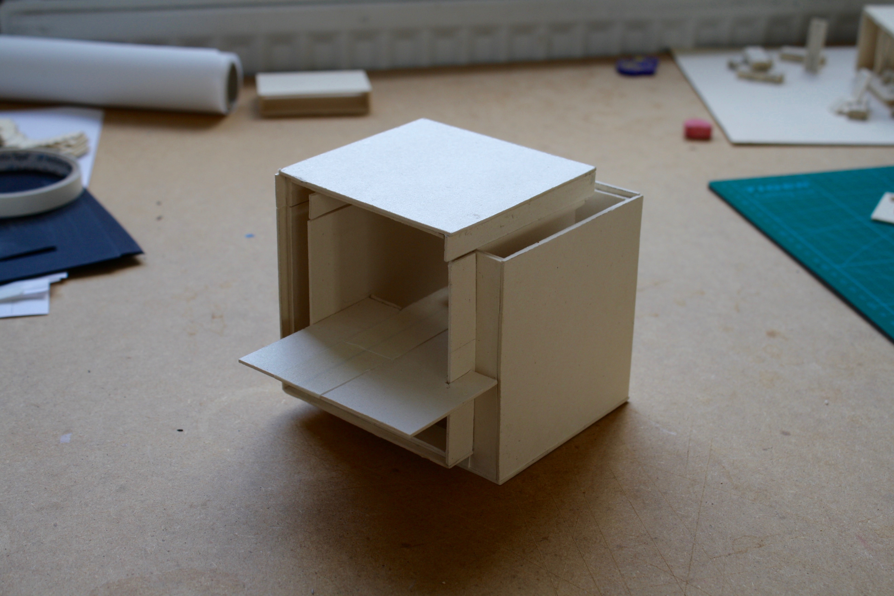 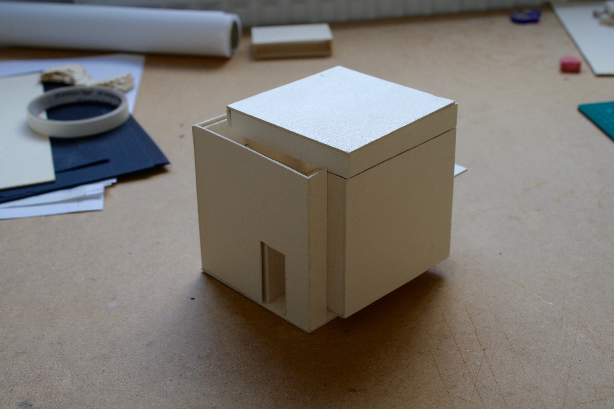 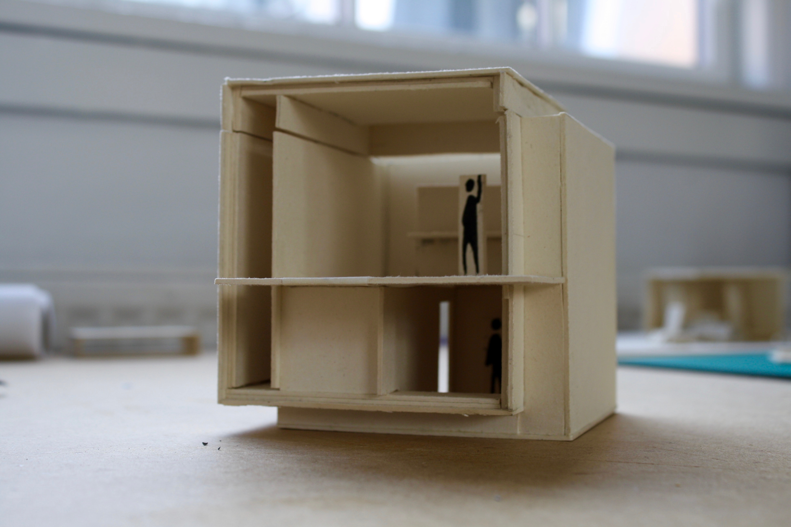 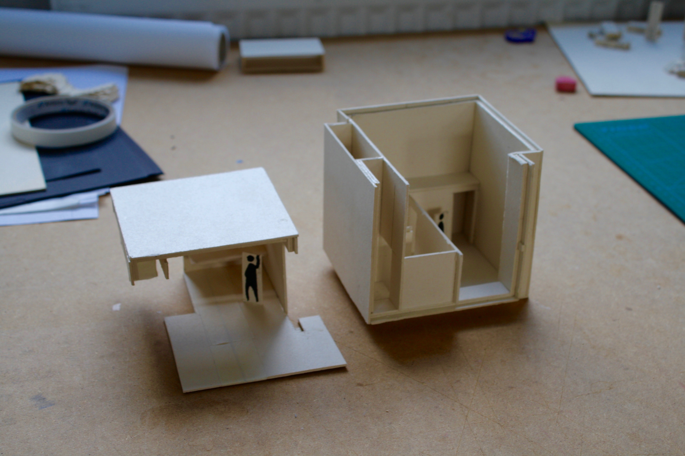 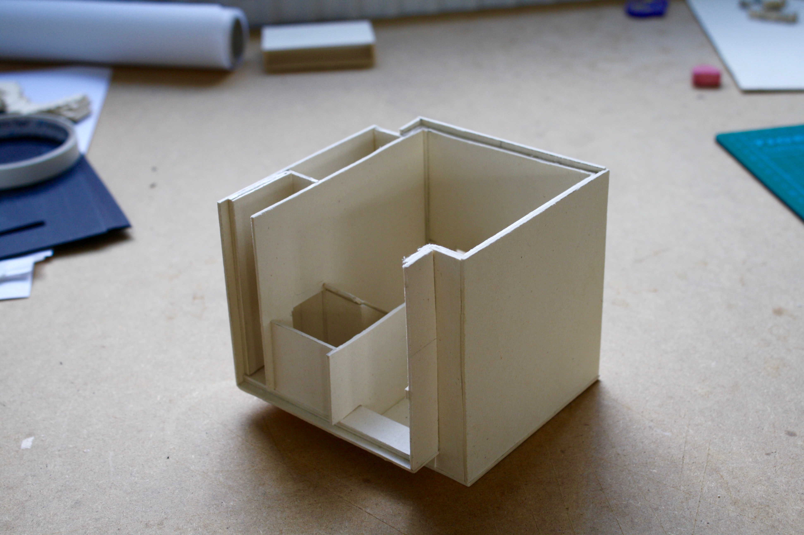 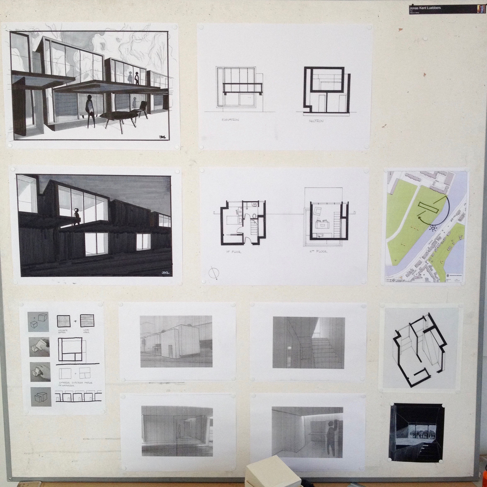 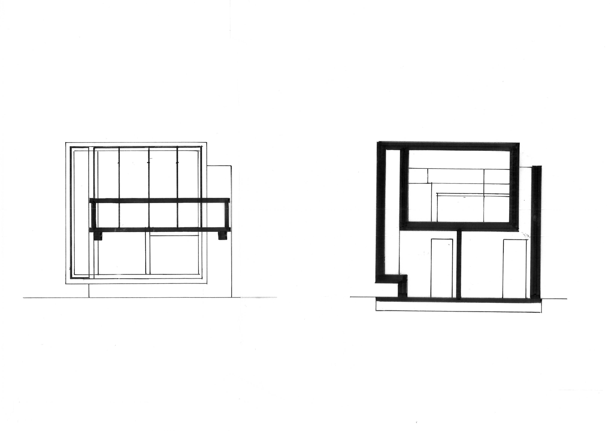
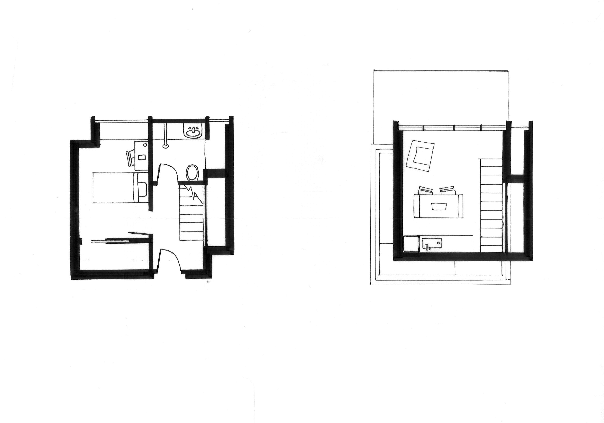
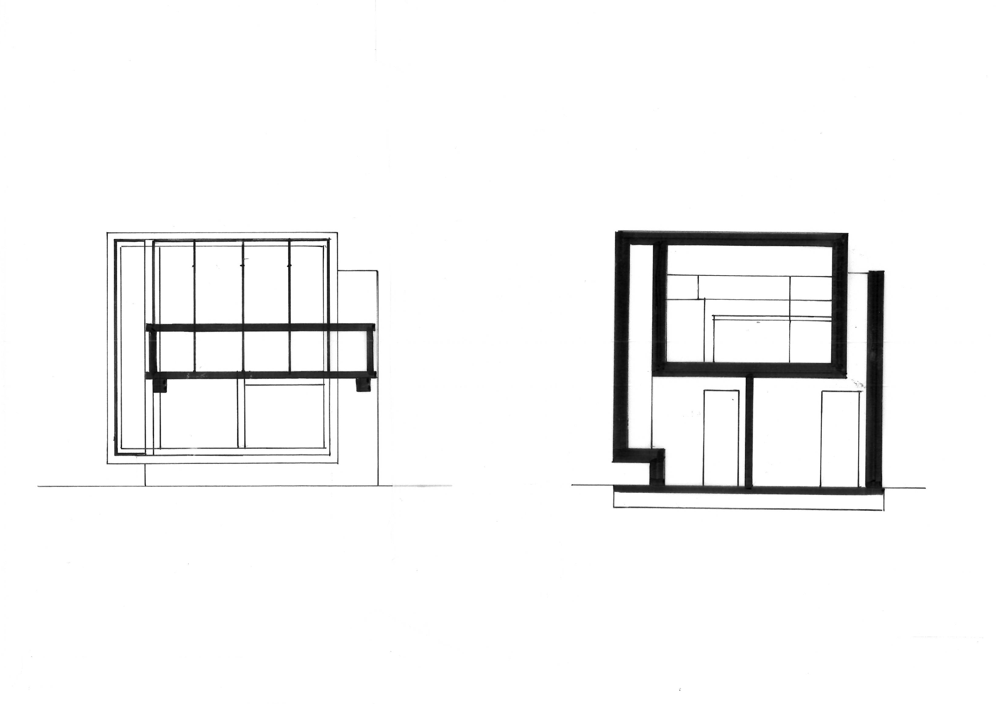
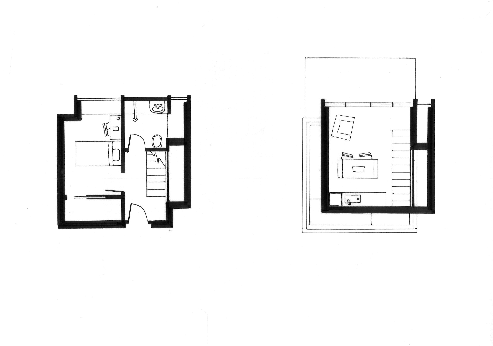
 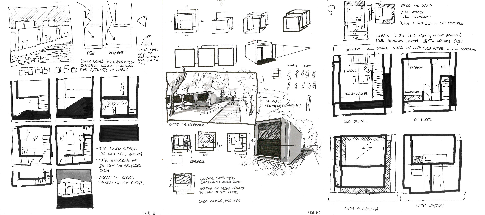
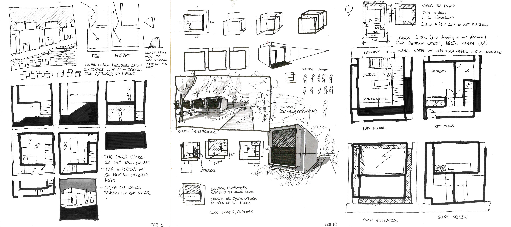